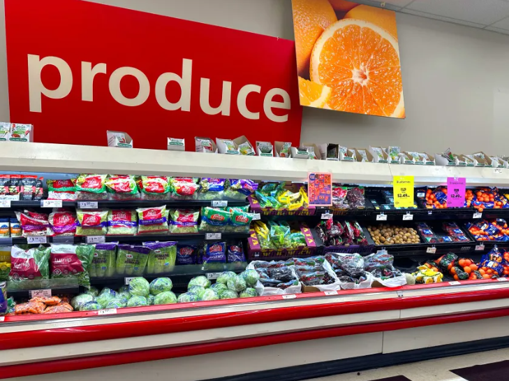

Проект представлен базой данных, содержащей информацию об увольнениях в мире в период с 2020 по 2023 годы. Цель данного проекта – произвести очистку данных (Data Cleaning) и провести исследовательский анализ данных (Exploratory Data Analysis) с помощью SQL.

Retail Dataset представляет собой базу данных 34 крупных супермаркетов США за период с 2017 по 2020 годы. Цель данного проекта – провести анализ супермаркетов с точки зрения прибыльности, определить ходовые товары, понять динамику продаж с целью облегчения принятия решений на основе данных с помощью Tableau.
Супермаркет (Superstore) — это очень большой розничный магазин, предлагающий широкий выбор товаров. Цель данного анализа - понять динамику продаж и прибыли супермаркета с целью облегчения принятия решений на основе данных. С этой целью был проведен анализ регионов и штатов США, сегментов покупателей, а также категорий товаров с помощью Microsoft Power BI.
Проект представлен базой данных, содержащей информацию о покупателях велосипедов. Цель данного проекта – произвести очистку данных (Data Cleaning) и анализ данных (Data Analysis) с визуализацией данных (Data Visualization) с помощью Microsoft Excel.
Проект представлен базой данных, содержащей информацию о киноиндустрии за период 1980-2020 годы. Цель данного проекта – произвести очистку данных (Data Cleaning) и анализ данных (Data Analysis) с визуализацией (Data Visualization) с помощью Python.